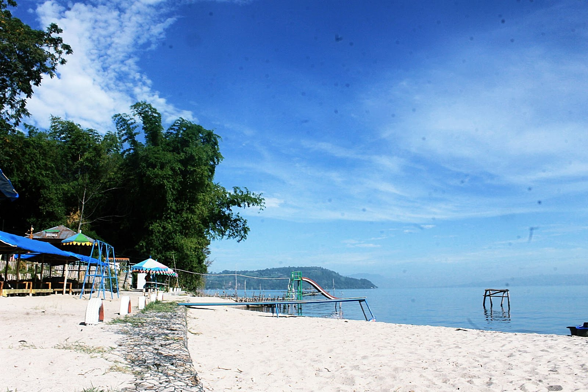

Pantai Lumban Bulbul Balige
Pantai pasir putih-nya Desa Lumban Bulbul.
Home
Informasi Tempat
Paket Wisata
Denah Kegiatan
Fasilitas dan Daya Tarik
Berita Terkait
Review Pantai
Kontak
1 / 3

2 / 3
3 / 3